We are officially in China!
Outside of being a long 24 hour journey, we had zero issues or delays during our journey to China.
Our Trip itinerary:
7pm Phoenix, AZ to San Francisco (2 hour flight)
(3 hour layover)
12am San Fran to Hong Kong (14hr flight)
Hong Kong - Shenzhen - Dapeng via taxi (3 hours)
Outside of clothes and some toiletries, here is what we packed:

Once we landed in Hong Kong, we grabbed our luggage and met our driver, who spoke zero english.
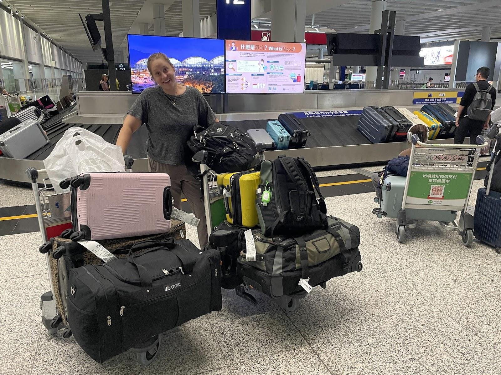
He was in a huge rush, time is truly money here, so he quickly folded up our welcome sign, grabbed Scott’s luggage kart, and ran down the airport with it.
Scott had to chase after him to keep up.
We wanted to exchange USD for RMB before leaving the airport, so Scott had to run up to him and pull out his wallet and show him money to express we needed to stop running towards the exit and back to the exchange center.
We get our money, which we haven't used a single dollar of because everything is paid through a centralized app in China (WeChat), and load up into the taxi van. He drives us to the Hong Kong / Shenzhen border (which, to be clear, is two different countries) and drops us with our luggage. We have to take our luggage and walk across the border ensuring our visas are good and luggage is cleared. Outside of a few anxious moments with the border lady checking our visas, we were through customs and into Mainland China!
The van we rode in was so pimp. It had wood grain floors, window curtains, and foot rests.
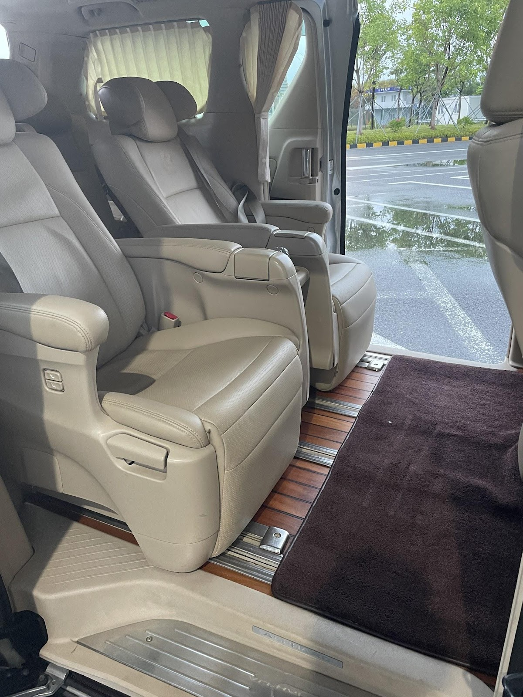
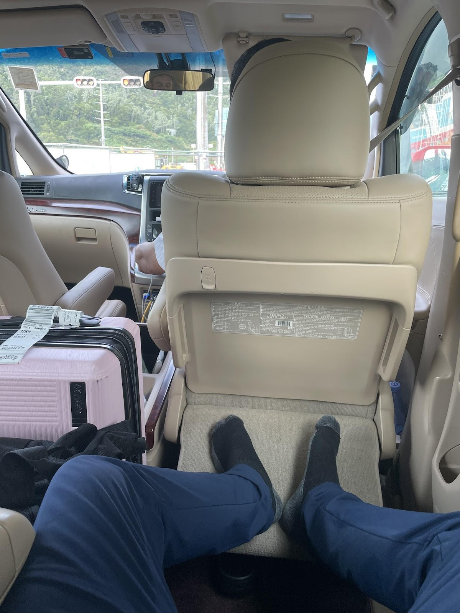
We met our HR representative (Jacky) at our apartment. He takes us inside and hands us the keys. He helps us download some local apps to get around town, gets us connected to the wifi, and answers a bunch of questions.
Our school provides us complimentary housing. In selecting an apartment we had two choices, the apartment building in downtown Dapeng (Called KPR) or the building on the outskirts of town (called Pure33).
Each had their trade offs.
- The downtown complex (KPR) is in the middle of the city and is built above the main grocery store (called Vanguard). You don't have to walk for shopping AND it's closer to our job (school). Walk to work is about 15 minutes from KPR.
- The building on the outskirts of town (Pure33) is further away from both downtown and school, but it backs up against open land and mountains, so the views are nice and you have hiking / walks in your backyard. Walk to work is about 30 minutes and the walk to town is 13 minutes.
We had to choose where to live prior to arriving, so after many hours of contemplation, Marissa and I decided to live in the complex that’s on the edge of town. If you know either of us, being close to nature is huge for us.
Besides our first day here, we are now very happy with our choice! Look at our bedroom view:
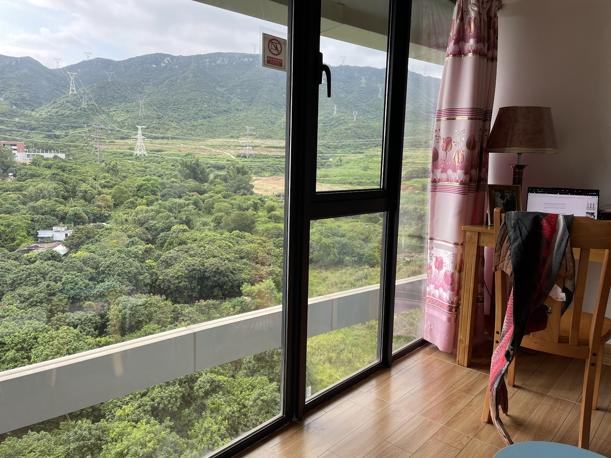
And here’s a drone photo Scott took of our apartments and the town. We are in the 3rd high rise building from the bottom of the photo:
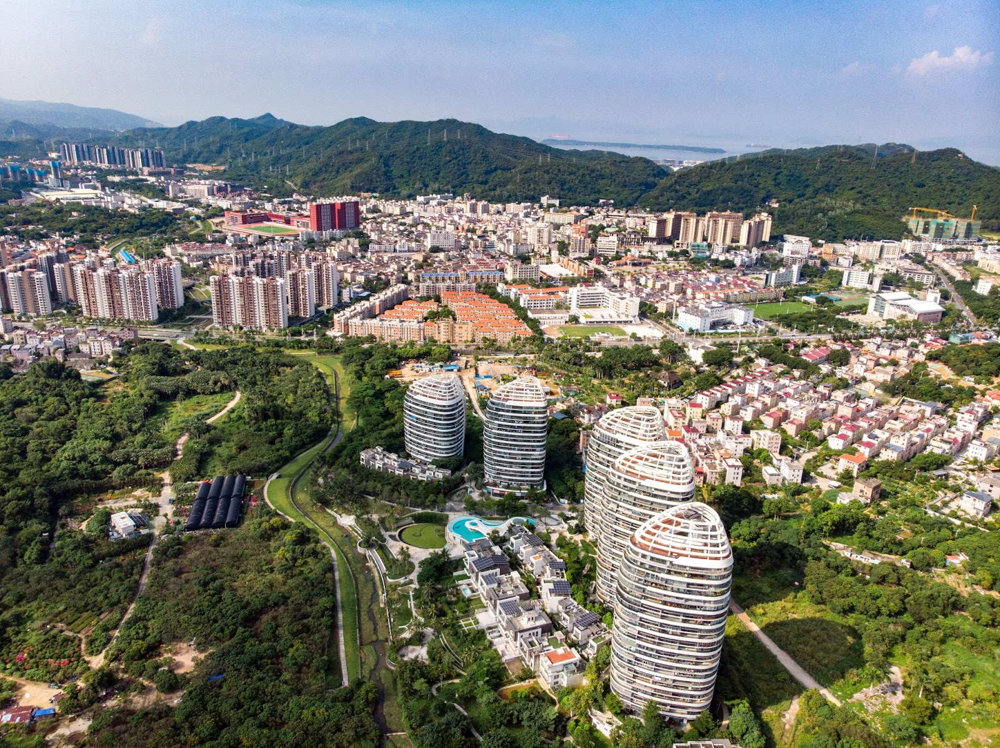
Here’s the mountains behind the complex:
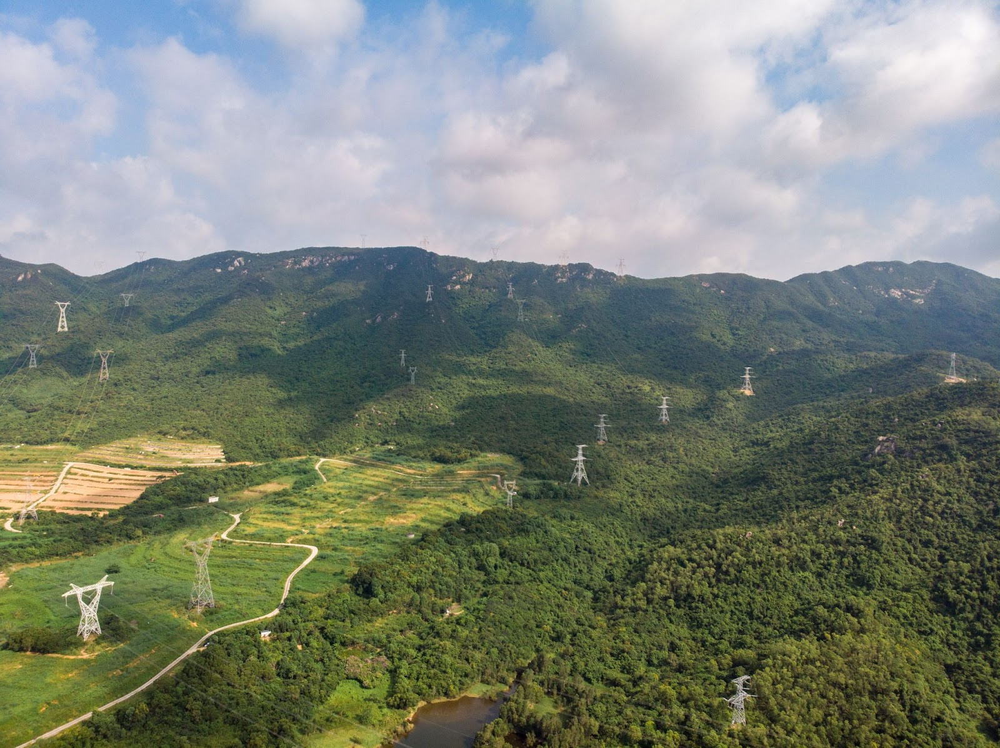
On day one we were sad at how far we were from everything. But after spending a few days here, we realize the town is only a 13 min walk, which will be nothing on a bike, once we acquire them, and only a $1.5 taxi ride. And now we order most everything on their delivery app, which costs $1 for delivery. But having the mountains in our backyard is much better than being close to town (for us). Not to mention we have now found actual hiking trails in these mountains with amazing views of the city:
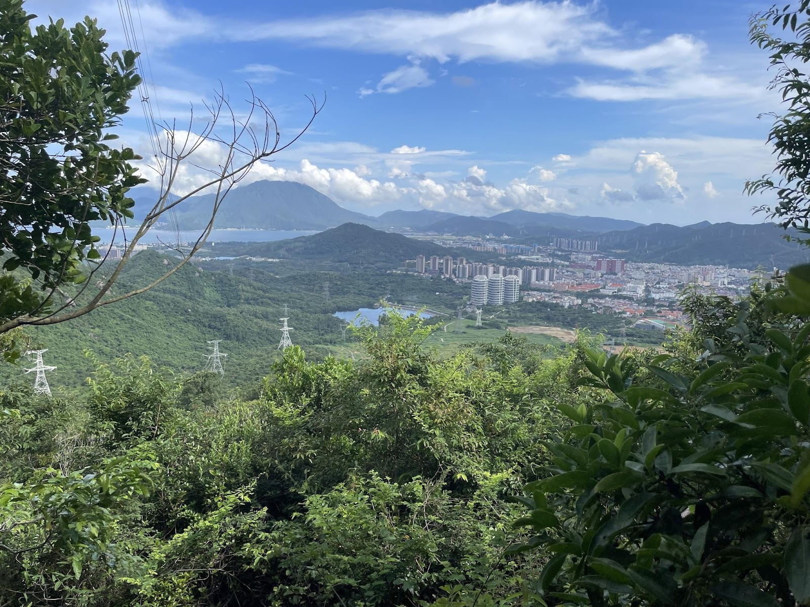
Speaking of the town, we are in a district called Dapeng. It’s in the city of Shenzhen, but a little beachtown about 1.5 hours from the main downtown area of Shenzhen.
Anyway, back to our first day.
So after getting our apartment keys, our HR guy (Jacky) takes us into town to get cell phone Sim cards. The cell plans are very cheap here. For $30 USD per month we have 3 phone lines, 60bg of data, and fiber optic internet in our apartment!
And it’s very humid here, we were sweating our butts off. Each day is close to 90 degrees F and 60-70% humidity. It's nice because you’re still able to do things outside, unlike in AZ where you simply can't bike ride in 110 degrees, here you can hike each day, just are soaked in sweat.
The grocery store here is wonderful. 90% of the items are new or different than we have in the USA. There’s an entire aisle of oatmeal. They have oatmeal pre-mixed with chia seeds, barley, and rye grains. It's amazing.
This first day in China was Monday the 14th. We spent the first week setting up our apartment and shopping for food and home items. We visited our school for the first time Thursday the 17th.
Our school has two principles, a native English speaker (he's Canadian) and a native Mandarin. Our school start date is delayed a few weeks because the school added a teacher lounge over the summer and the city inspector, after final inspection, said “oh, by the way, your school hallways are too narrow and need widened”
That is a major undertaking and massive construction was needed to widen the hallways 18 inches. All the buildings here are made of concrete.
When we are off wifi and using phone service, all the google suite items are blocked here (google maps, google chrome, google drive, google photos, etc), so we are doing our best to find replacements. Thankfully Apple maps works.
But for the rest we are using Chinese apps and screen shotting everything and putting in a translator app.
At the end of that first week we took public transportation into downtown Shenzhen. We left on Saturday afternoon. First we take a bus for about 1 hour and 15 minutes then hop on the metro for a 30ish minute ride to downtown.
We visited the Dafen oil painting village. This is an old area where artists live. The bottom of the buildings are the people's art studios (that are opened to the public) and they live above. The alleys were lined with easels and chairs for customers to sit and paint or have classes teaching you how to paint. Inside of the artists' studios they were selling their work. Many copies of famous paintings but also originals.
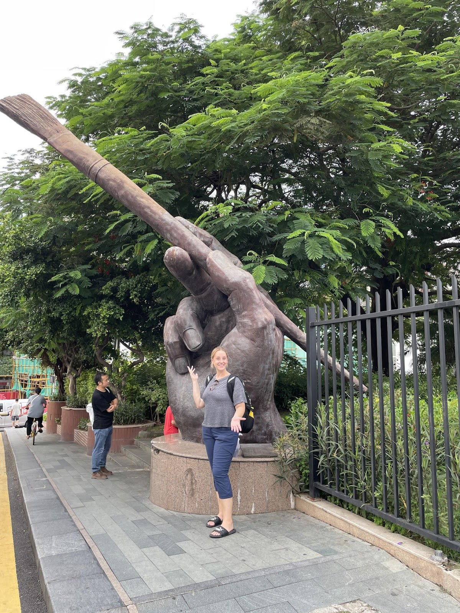
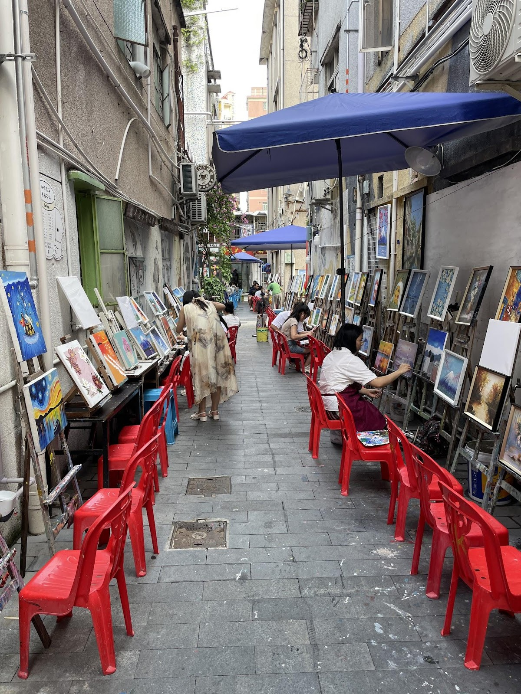
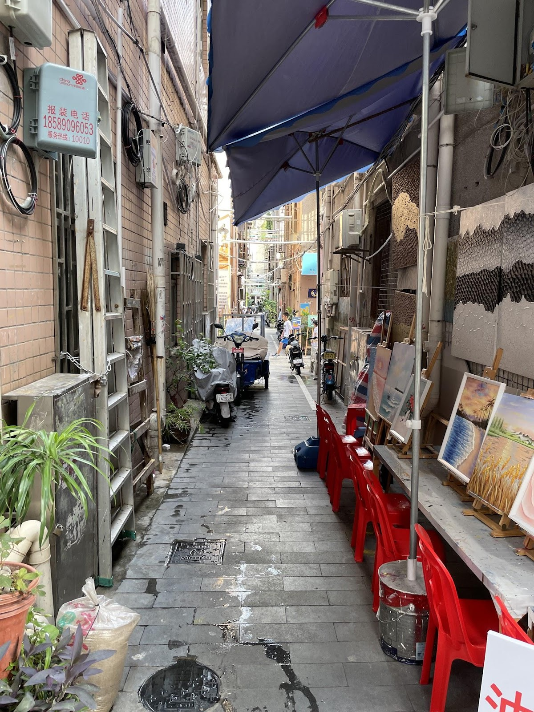
From here we walked back to the metro, stopping to get street food:
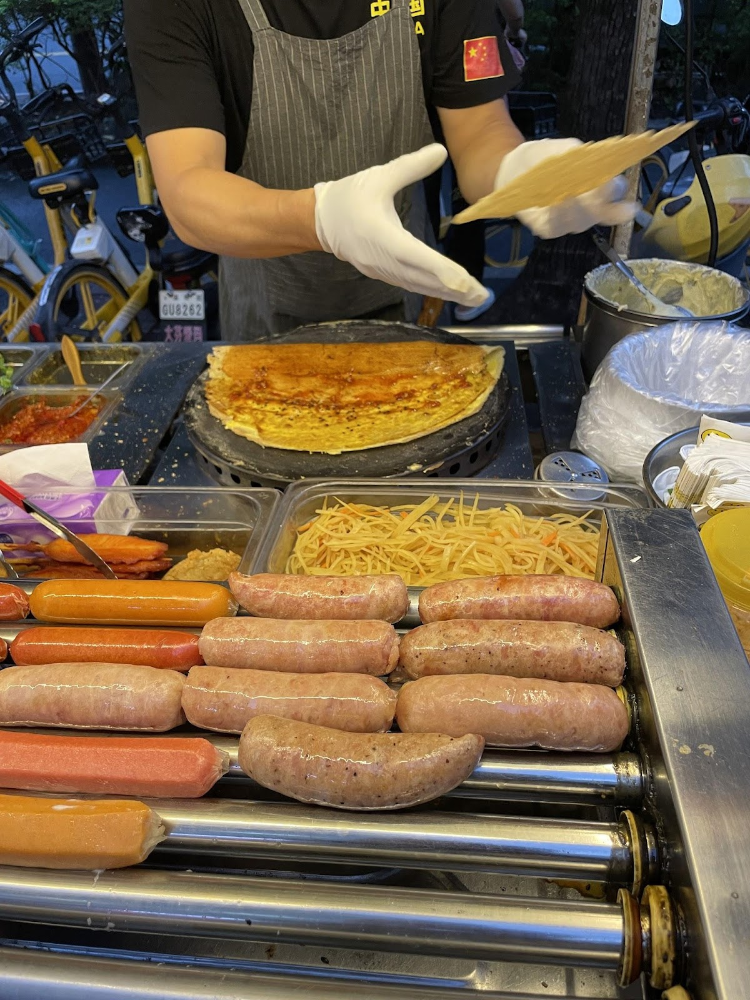
We slept at our church building Saturday night (which is past downtown Shenzhen from our town). Our church building is actually a large three story home in a very affluent neighborhood. What's so cool is Marissa's aunt and uncle started this branch some 15 years ago and now we are here!
In China we are restricted to what we are able to say in regards to our beliefs. We are not allowed to "proselyte" which means we cant talk about our beliefs to any Chinese nationals. We are also not allowed to worship in the same building as Chinese nationals, so our branch is only foreign nationals. With that, the Chinese government does allow us to gather and worship, but must be kept low key. Hence the home church building.
After church, Marissa had a doctors appointment in downtown Shenzhen, and we made our way back to our apartment.
In our next post we will write about our school, our 2 weeks of training, and all the teachers we have met who are from all corners of the globe.
Talk soon!
Comments